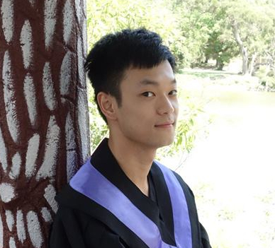

Chun-Hsiao (Daniel) Yeh
M.S. Student, Research Assistant
Division of Computer Science
Department of Engineering Science and Ocean Engineering
National Taiwan University, Taipei, Taiwan
danielyehh [at] gmail.com
About Me
I am currently a graduate student at National Taiwan University, where I am supervised by Prof. Herng-Hua Chang. My research interests are in the area of Computer Vision, Machine Learning, especially in Deep Learning. My current research project focuses on learning domain transfer with face liveness detection.
I will be joining Vision Group in ICSI, UC Berkeley as a visiting researcher in Sep. 2018. I will be mainly working on deep learning for self-driving perception and control, advised by Prof. Stella Yu.
News
- 09/2018: Start my visit at ICSI, UC Berkeley
- 02/2018: One paper accepted to WACV 2018.
- 03/2017: One paper accepted to MVA 2017.
Publications

{kind=link}
Conference Demo
{kind=link}
Recognition From Hand Cameras: A Revisit with Deep Learning
Asian Conference on Computer Vision (ACCV 2016)
[Live Prediction Demo] [Human Intention Anticipation Demo]
[Live Prediction Demo] [Human Intention Anticipation Demo]
conference demo
Experiences
|
|
Dec. 2015 | |
|
|
July 2014 - Aug. 2014 |